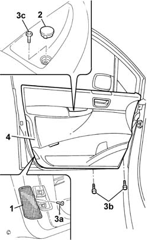
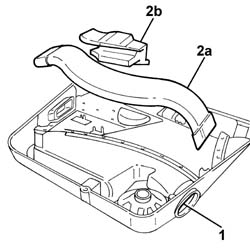
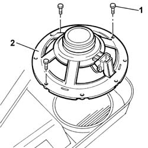

7005E10 FRONT SIDE DOOR INNER PANEL - R R FOR REPLACEMENT
- Path
- Procedures > 70 FITTINGS > 7005 PASSENGER COMPARTMENT FRONT SIDE DOORS > 7005E FRONT SIDE DOOR TRIM > 7005E10 FRONT SIDE DOOR INNER PANEL - R R FOR REPLACEMENT
- Kind
- repair procedure (removal / refitting; the operation number is the code)
- Applies to
- all engines; all production periods
- Interactive page
- https://sloeber94.github.io/elrnDB-fUlss/en/#/179007672
Applies to: all engines; all production periods
 Removing
Removing
 Refitting
RefittingOp. 5530B56 BATTERY DRIP TRAY COVER - R.R.
- Disconnect the negative battery terminal.
Op. 7040E24 LOWER COURTESY LIGHT INDOOR PANEL - R+R
1. Release the reflector using a suitable tool and remove it.
2. Release the trim using a suitable tool and remove it.
3. Undo the fixing bolts (3a), (3b) and (3c).
- Release the fixing buttonsusing the special tool.
 | Description | Code | Function |
|---|---|---|---|
. | Knife | 1.878.077.000 | Release the fastening buttons |
- Release the door panel.
- Disconnect the door opening rod.
- Disconnect the electrical connection for the speaker.
4. Release the wiring and remove the door panel.

Applies to: all engines; all production periods
1. Release the air duct from the vents.
2. Remove the air duct (2a) and the support (2b) from the door panel.

Applies to: all engines; all production periods
1. Undo the retaining bolts.
2. Remove the speaker.

Applies to: all engines; all production periods
Refitting
Removing- Position the speaker.
- Tighten the retaining bolts.
- Position the air duct and the support on the door panel and secure it to the vents.
- Connect the door opening rod.
- Connect the electrical connection for the speaker.
- Position the door panel and secure it using the special buttons.
- Tighten the retaining bolts.
- Position the trim on the handle.
- Position the reflector and secure it.
Op. 7040E24 LOWER COURTESY LIGHT INDOOR PANEL - R+R
- Connect the negative battery terminal.
Topics linked from this page (3)
- 5530B56 BATTERY DRIP TRAY COVER - R.R.
- 7005M14 SWITCH UNIT CONTROLLING ELECTRIC WINDOWS REAR VIEW MIRRORS AND DOOR LOCK ON DRIVERS SIDE FRONT DOOR R R
- 7040E24 LOWER COURTESY LIGHT INDOOR PANEL - R+R
Topics that link to this page (12)
- 5505A42 CONTROL UNIT DIGITAL NETWORK NODE IN DRIVERS SIDE DOOR RR
- 7005A28 FRONT SIDE DOOR LIMITER- REPAIR OR REPLACE
- 7005C08 FRONT DOOR EXTERIOR HANDLE MOUNT (ONE), LH OR RH - R R
- 7005C11 FRONT SIDE DOOR OUTSIDE HANDLE R R
- 7005C17 BLOCK FOR FRONT SIDE DOOR LOCK R R WITH DOOR PANEL REMOVED
- 7005D15 FRONT SIDE DOOR DESCENDING WINDOW GLASS R R
- 7005D18 FRONT SIDE DOOR DESCENDING WINDOW GLASS CHANNEL R R
- 7005D26 FRONT SIDE DESCENDING WINDOW GLASS SCRAPER (OUTER) R R
- 7005D30 FRONT SIDE DESCENDING WINDOW GLASS SCRAPER (INNER) R R
- 7005E52 WEATHER STRIP ON FRONT SIDE DOOR PILLAR TRIM (ONE) LH OR RH - R R
- 7005M26 ONE FRONT DOOR ELECTRIC WINDOW MECHANISM', LEFT OR RIGHT - R.R .
- 7005M29 FRONT SIDE DOOR ELECTRICALLY OPERATED WINDOW MOTOR R R WITH DOOR PANEL-MOUNT FRAME REMOVED